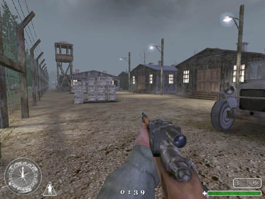
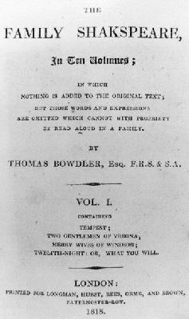
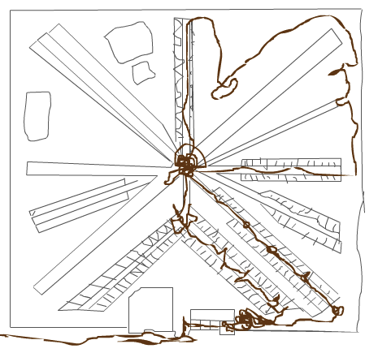
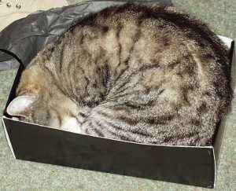
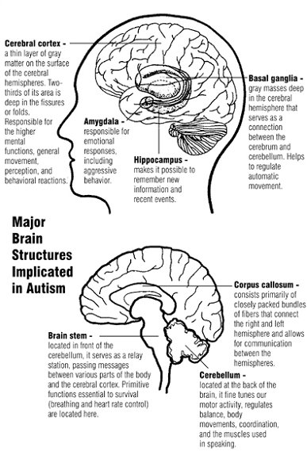

HAVE 50 CASH AND STAB PROOF VEST LOOKING TO SWAP FOR A BIKE,
Glasgow City Centre.
I travel a lot to give talks. I reproduce this leaflet, found in the common-room of the Central Tungus Plateau University (Okrug campus) in Siberia.
Preparing the visit
-
Do not volunteer a contact phone number.
-
Tell the invitee your office room number, but not the building it is in. The invitee wants to see the campus, and his suitcase has been cooped up in an aeroplane for nine hours and needs taking for a nice long walk.
-
Be especially vague if:
-
your department’s building has recently been constructed and nobody knows where it is.
-
you are on other end of the campus from related subjects such as mathematics.

The campus -
you are on the other end of the campus from where you teach your students.
-
signposting is nonexistent or better still, out-of-date.
-
your country’s climate is harsh (icy sleet, intense sun, radiation).
-
the campus presents significant natural or man-made barriers such as a lake, river, ravine, electrified fence, or is scattered across different sites, mountains, or dimensions in space-time.
-
best of all, if there are two, three, or even half-a-dozen other universities in the same metropole.
-
-
If you are American give dates the way you know is right (1/12/2006 vs. 12/1/2006) without comment.

Thomas Bowdler ‘Family Shakspeare’
-
Edit the invitee’s abstract freely (don’t worry he’s a native speaker and you’re not; you know better). Publish your corrected and improved version on the web for the planet to enjoy, under his name.
-
For some reason take particular care to eradicate any html links the invitee may include in the abstract, especially in such phrases as to download the paper click on this link or Here is the answer to life, the universe, and everything.
-
If the invitee does not read your language (or your alphabet, assuming you have one), provide him with exhaustive details in your language on how to arrive.

nonverbal information -
Nonverbal information such as maps should be drafted by an epileptic with attention deficit disorder and palsy, and should omit scale or context information allowing to establish north and south or whether features indicate represent roads, corridors, or canals on Mars. He can use a compass. (True story: I once navigated in a car from Ishikawa to Kyoto using only a compass. I had been given a map, but I couldn’t read it, or any of the street signs, and back in the day I didn’t have GPS.
So I matched the movements of the compass needle to the shape of the road I thought I was on. To my surprise this worked.)
The arrival
-
On arrival the invitee is most likely interrupting your work. Therefore, do not ask how he is, how his journey was, or offer water or coffee (especially if you already have some and are drinking it in front of him).
-
Leave him to ask where the bathroom is, if he decides he needs it.
-
Do not tell anybody to expect the invitee, especially if there are other talks booked in distant parts of the building to which he (and his suitcase) might be directed.
-
Give everybody in the office garlic and onions for breakfast.
-
Arrange rendez-vous in areas with no available shelter from the elements, and give instructions which seem specific but in fact are not. For example talk about
‘the McDonalds’
when there are in fact two close by but each not visible from the other. When you fail to meet at the restaurant you had in mind do not attempt to contact the invitee by mobile phone and keep your own mobile off, so that his final messages before hypothermia sets in are recorded for posterity.Assume the invitee is just fine.
Hospitality
-
During lunch (if you feel the invitee warrants feeding) explain that you forgot the bureaucratic code for paying speakers' lunches so he will have to pay for himself.

Accomodation -
Put him in a nice cosy room.
-
If the invitee learnt your language, insist on english — you only have the one day with him. He has time to study your language when he’s back home.
-
Talk your own language with your colleagues, switch back to english with the invitee. Pretend blank incomprehension if he tries joining your conversation — it’s like a ghetto, but with just one person in it with the rest of the world looking in.
-
If his language skills are manifestly superior to your own, it is important to explain you are speaking english
‘because it is easier for him’
. Insist on speaking english if you later meet the invitee at conferences, or of course in his own country. Say you feel uncomfortable speaking your own language.
The human brain -
The english words
‘conversation’
,‘communication’
, and‘dialogue’
, are all synonyms of‘monologue’
. Thus if you have something to say, say it and keep on saying it until you have said everything you felt you had to say.If you detect the invitee wishes to clarify points he may not have understood, or to ask you to amplify upon areas which are of particular interest to him, do not stop but raise your voice and increase the cadence of your speech and continue speaking until you have quite exhausted yourself, then, since the invitee has manifested signs of not being satisfied, without pause start from the beginning and run through it all again until the end.
-
If the invitee mentions a food allergy (milk, nuts, gluten) before his arrival, provide milk chocolate and nut digestive biscuits as refreshements, which he can watch the audience eat. If on the other hand the invitee mentions no food allergy beforehand, provide no refreshments.
Dress to travel -
If you take the invitee out to dinner, make sure this is late (after 9pm). If the climate is particularly cold, make sure you spend a long time outdoors waiting for colleagues to assemble; the invitee is tired, sweaty, his clothes are not perfectly suited to your climate, and he may not have eaten or slept well in 24 hours — help him to appreciate this. </ul>
The talk!
-
Do not in any circumstances properly advertise the talk.
-
If you must advertise at all, do so at the last moment, only within your group, and omitting other departments and nearby universities where there might also be interest.
Seminar room entrance -
Do not clearly state which room the seminar is in, in the advertisment. If the door of the seminar room has a latch, keep it locked so that arriving audience think the room is out of use and go away. If you are audience, in no circumstances knock on closed doors or otherwise declare yourself. Go away.
-
Ignore instructions about what materiel the invitee will need (projector, whiteboard, laptop), particularly if these instructions were declared clearly and well in advance. Consider the invitee’s mounting panic as a rudeness and let it show. Leave it to the invitee to take the initiative and run round your department finding machinery that works.
-
Provide no whiteboard rubber, or if inadvertently one is present make sure the pens provided do not work or are actually permanent markers. Only provide light colours such as red or yellow. Do not test compatibility of the laptop with the projector. Have no pointing device available. Feign ignorance of proper operation of the projector, especially if you are in charge of organising talks and have done this many times before.
-
By Murphy’s Law the projector’s data cable will be incompatible with the socket in the speaker’s laptop. On no account undermine the natural order, e.g. by provision of adapter plugs, or of more than one cable.
-
Once the talk begins, extinguish all illumination so the audience sees only the bright lights of the slides, and the faint reflections dancing in the invitee’s glasses as he turns his head in the pitch black trying to find his audience. Hypnotised, fall asleep.
-
Potential members of the audience should understand
‘this will not be a technical talk’
in the abstract to mean‘this will be a technical talk’
. Do not turn up. -
Potential members of the audience should understand key words like
‘logic’
and‘lambda-calculus’
to mean‘this will be a technical talk’
. Do not turn up. -
If you have at least one of the following qualities, the invitee’s talk is not for you:
-
A head.
-
Skin.
-
You drink coffee.
-
You work in a university. Do not turn up!
-
-
Potential members of the audience should understand
‘this will be a technical talk’
in the abstract to mean‘this will not be a technical talk’
. Turn up and look confused and bored. -
If you are expert turn up, and proclaim that his work is irrelevant (otherwise you would have invented it yourself, probably in kindergarten).
If the work has many connections with yours, assert it is a special case of your research. If the work has nothing to do with yours, also assert it is a special case of your research. If either of these assertions is demonstrated incorrect, conclude in triumph that the work is certainly irrelevant (relevant work is by definition a special case of your research).
Departure
-
Tell the invitee which bus to take, but not from which side of the road. His suitcase will slow him down, but also protect him in a collision with traffic.
-
Take care to be misleading about distances: say
‘the train station is just round the back of the restaurant’
when actually the road which leads to it is just round the back of the restaurant (and the station itself is thirty minutes' brisk walk distant; more when dragging a suitcase).Just at the foot of the arch -
Do this especially if the invitee has a connection only every two hours.
-
Do not warn the invitee if he is expected to pay his own costs. If asked display offended incomprehension that the privilege and opportunity of meeting you is not recompense enough.
-
After his long voyage home, the invitee will write a brief e-mail expressing gratitude for your hospitality. Never get a message in first thanking him for coming, though you were right next to your terminal all that time.